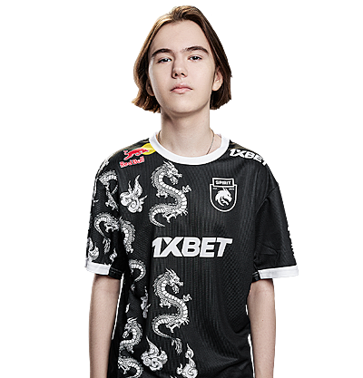

Данил Крышковец (род. 25 января 2007, Томск), более известный под ником «donk», — российский киберспортсмен, игрок в Counter-Strike: Global Offensive и Counter-Strike 2, выступающий за организацию Team Spirit.
Родился 25 января 2007 года в Томске. В Counter-Strike Данил начал играть в 5 лет вместе со своим братом. Через два года они перешли на новую версию игры. Юноша очень много времени уделял тренировкам, а из-за хорошей учебы родители никак не вмешивались в его многочасовые тренировки. В 14 лет Данил смог пройти в европейский FPL-C, что является отличным достижением для его возраста. После такого достижения его заметил OverDrive, который, сыграв с парнем несколько игр, посоветовал его академии Team Spirit. Однако организация не спешила подписывать с игроком контракт: из-за возрастных ограничений Данил не мог принимать участие в крупных турнирах. Сказывалась также посредственная игра парня за новую команду: за 22 карты на семи турнирах он в среднем набирал 0.97 рейтинга. Несмотря на все сложности, стороны смогли договорится и Данил стал выступать за академию «драконов».
Выступая за академию Team Spirit Данил показывал неплохие индивидуальные показатели. По итогам 2022 года Sh1ro, занявший в том году 3 место по версии портала HLTV, отметил его талант и сказал, что в будущем игрок попадет в двадцатку лучших игроков года. В FPL также высоко оценивали показатели парня и говорили, что «в свои 15 лет Данил является одним из самых доминирующих рифлеров, которых когда-либо видела лига». Академический состав стабильно рос и по итогу за несколько месяцев уверенно держался в топ-50 лучших команд мира. Основной состав организации наоборот переживал не самый лучший период: трое игроков ушли из состава и где-то надо было искать новых. Тогда было принято решение взять трио из академии, в которое и вошел Данил.
Команда быстро сыгралась и уже на первом турнире CCT North Europe Series #6 они заняли первое место. На том турнире Данил оказался лучшим по индивидуальным показателям, а также занял четвертое место среди всех игроков турнира. Уже на следующем турнире CCT Online Finals #2 состав занял второе место, а donk стал первым игроком чемпионата по личным показателям. На своем первом LAN-турнире Dunav Party парни также заняли первое место, а donk все также стал лучшим игроком турнира.
Свое первое звание MVP от портала HLTV Данил получил за победу на турнире BetBoom Dacha. Тот турнир парень закончил с рейтингом 1.31. Donk стал вторым самым молодым обладателем MVP в истории в возрасте 16 лет и 10 месяцев. Попав на один из самых важных турниров года IEM Katowice 2024, Данил стал демонстрировать невероятный уровень игры. На том турнире ни одна команда не смогла победить Team Spirit. Портал HLTV признал выступление donk самым лучшим дебютом на больших турнирах за всю историю игры. Также парень повторил рекорд боснийского игрока NiKo по индивидуальной статистике на крупном турнире (1.70 рейтинг 2.0). На том турнире Данил получил MVP, тем самым стал самым молодым игроком, получившим эту награду на больших турнирах. После такого успешного выступления в Катовице вся профессиональная сцена начала отмечать запредельный уровень игры Данила. На том турнире игрока критиковали за его выкрикивания в сторону оппонентов. Например, украинский киберспортсмен и тренер B1ad3 отметил хорошую игру donk, но при этом сказал, что юному киберспортсмену следовало бы исправить свое поведение.
На своем первом мажоре «драконы» прошли в стадию плей-офф со счетом 3-0 (3 победы), однако в финальной части турнира, несмотря на то, что многие считали Team Spirit главными претендентами на трофей, они проиграли в первой же игре команде FaZe Clan, которая на тот момент занимала первое место в рейтинге HLTV. В последнем матче Данил стал единственным игроком команды, кто вышел в «плюс» по статистике, а сам турнир он закончил с рейтингом 1.35 и стал лучшим игроком команды.
